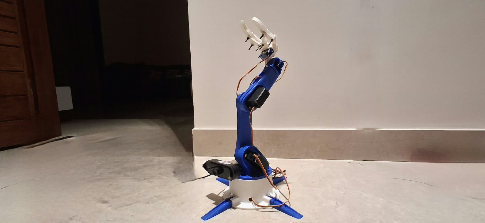
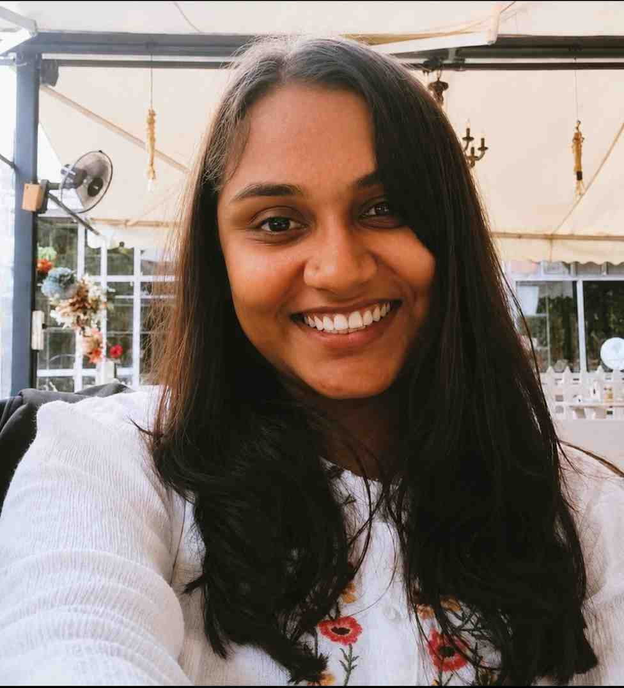

Data Engineer — Dataweave
Maintained data pipelines feeding downstream analytics and reworked web-crawling logic to reduce unnecessary requests.
Hi, I am
I am a
I'm an engineer working at the intersection of computer vision, robotics software and GPU computing. I build systems that connect perception models to real robotic hardware.
B.E. Information Science · 2022–2026 · CGPA 8.78/10 · Mysuru, India

A portfolio spanning edge AI, robotic manipulation, ROS 2 architecture and GPU scheduling — with emphasis on engineering decisions behind each system.
A Flask MJPEG stream lets me watch the detection-to-motion loop live.
A custom object detector on a Raspberry Pi drives physical pick-and-place motion through a Pi–Arduino serial connection and a PCA9685 servo driver.

I fell in love with robotics by experimenting with real hardware, learning from failures, and trying to understand how the complete system works. My curiosity later expanded into GPU computing through climate modelling at IIT Bombay.
I started loving robotics when I began experimenting with real hardware. I burned 30 servos while trying to understand how the system worked. Those experiments made robotics more than an abstract idea: every connection, movement and failure was a chance to understand how software and hardware interact.
During my time at IIT Bombay, I got access to the PARAM Rudra supercomputer to run climate models. That experience sparked my exploration of GPU computing and high-performance computation—and helped connect large-scale computing with the performance questions I later explored through CUDA projects.
Perception, manipulation, robotics middleware and GPU scheduling — connected by a systems-engineering mindset.
A custom object detector running on Raspberry Pi drives physical pick-and-place motion through a Pi–Arduino serial connection and PCA9685 servo driver.
Reorganising a blocking vision-to-action script into ROS 2 nodes with an action-based interface and configurable launch parameters.
A GPU scheduling project designed to overlap kernel execution and memory transfers across multiple CUDA streams.
A survey of 6D pose estimation and grasp detection techniques, focused on perception challenges in cluttered bins.
The software, systems and computing tools I use across robotics and perception work.
Python · PyTorch · TensorFlow · Keras · JAX · OpenCV · YOLOv8 · ONNX · Object detection & classification
ROS 2 · SLAM · rclpy · Actions · Custom interfaces · URDF · RViz · Serial/UART · PCA9685 servo control
CUDA C · CUDA Runtime API · NVIDIA CUDA Toolkit · NVCC · Parallel computing · Inference optimisation
Linux · C++ · CMake · Git · YAML · JavaScript · HTML/CSS
NumPy · Pandas · xarray · Matplotlib · MySQL · SQL · Data pipelines
Edge inference · Vision-to-actuation integration · Robotics middleware · GPU scheduling · Pipeline debugging
Authors: Parinitha P. Rao, Vineeta Koppalkar and Manjesh R. Published online 1 April 2026 in ICT: Applications and Social Interfaces, ICTCS 2025, Lecture Notes in Networks and Systems.
DOI: 10.1007/978-3-032-19690-3_40 ↗
Patent: Indian Patent Application No. 202641059188 A
Maintained data pipelines feeding downstream analytics and reworked web-crawling logic to reduce unnecessary requests.
Set up model training and evaluation pipelines using regression metrics; worked with multidimensional spatio-temporal datasets using xarray and NumPy.
Vidya Vardhaka College of Engineering · CGPA 8.78/10.
Interested in robotics software, perception engineering, edge AI and GPU computing opportunities.
raoparinitha03@gmail.com · Mysuru, India